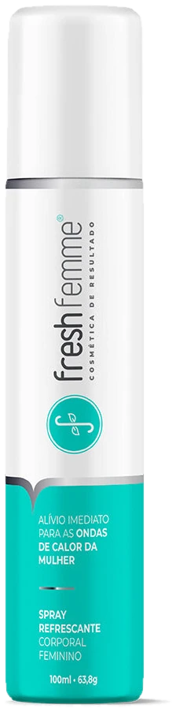

Em vez de desenhar uma mulher inteira em cores falsas (que sempre fica estranho), estas ideias mostram o efeito do spray de outro jeito. As duas primeiras estão funcionando: cada uma repete sozinha e tem o botão "Ver de novo".
Ideia A
Sem pessoa. A capa começa quente; o spray dispara e uma onda de frio toma a tela, que vira o verde-água da marca. O frescor tem a cor da FreshFemme.

38,4°C · temperatura da pele
O original e inovador Spray Refrescante FreshFemme. Natural, vegano e aprovado pela Anvisa.
Quero o spray →Ideia B
A foto real da campanha continua real (ela está viva, sorrindo). Só a lente mostra o calor, e no pescoço, onde ela borrifa, fica azul. No computador a lente segue o mouse.
Pela câmera térmica, a temperatura da pele cai na hora em que ela aplica o spray no pescoço, como um colar.
Quero o spray →Passe o mouse pela foto.
Ideia C
O caminho mais simples e o que a Mariah pediu na reunião.
Só os banners de promoção girando (Natal, Ano Novo, kits), como todo e-commerce grande faz. Já estão prontos no tema.
Uma faixa "Veja pela câmera térmica" com o vídeo real do Shark Tank ou o reel que o Fabiano mandou, e o termômetro 38,4 → 31,2 °C. Nada gerado por IA: é a prova de verdade.
A ideia A ou B pode virar essa faixa abaixo dos banners, em vez de ficar na capa. Ver a prévia atual